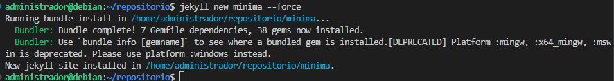
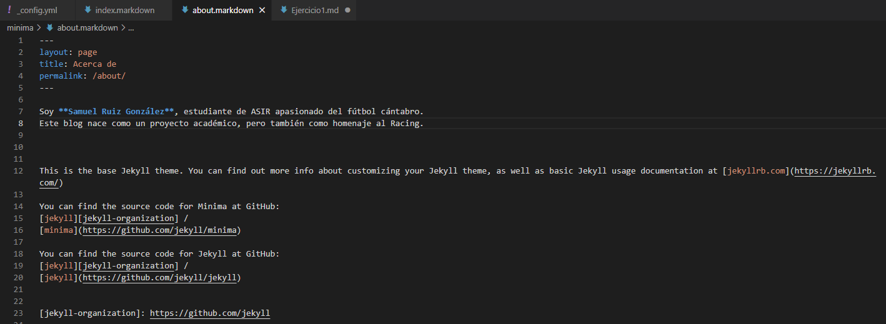
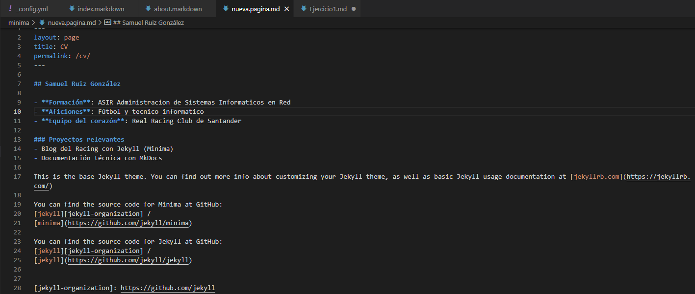
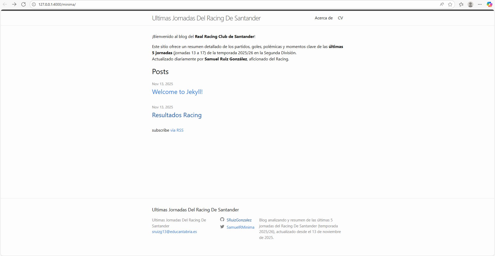
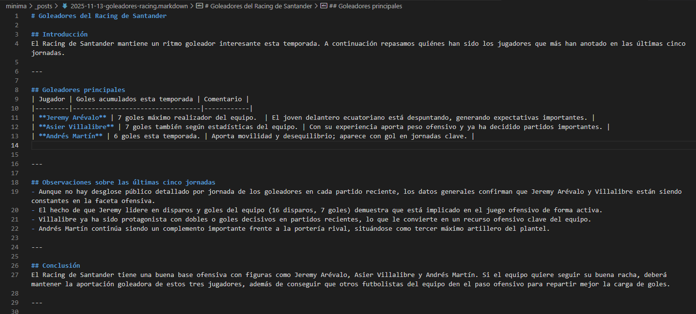

He creado una carpeta llamada Minima en la que voy ha hacer todo el trabajo.
PASO 2
He echo un force para guardar todos los archivos en el minima con el comando jekyll new --force minima

PASO 3
Ahora entramos dentro del archivo _config.yml para modificarle y ir cambiando el contenido.En mi caso voy a hacer un blog de las ultimas 5 jornadas del Racing de Santander.
PASO 4
Luego modificamos el index.markdown cambiandole el contenido referente a nuestro blog
PASO 5
Modificaremos el abaut.markdown cambiandole el contenido.

PASO 6
Ahora crearemos otra pagina nueva.pagina como nos pide el ejercicio.

PASO 7
Despues he creado otro posts con los resultados del Racing de Santander
PASO 8
Y ahora vamos a entrar en la pagina para ver como vamos, con el comando bundle exec jekyll serve y entramos en el link de la ip.

PASO 9
Luego he creado el segundo posts sobre los goleadores del Racing de Santander

PASO 10
Ya por ultimo he creado el ultimo posts sobre las tarjetas que les han sacado a los jugadores del racing